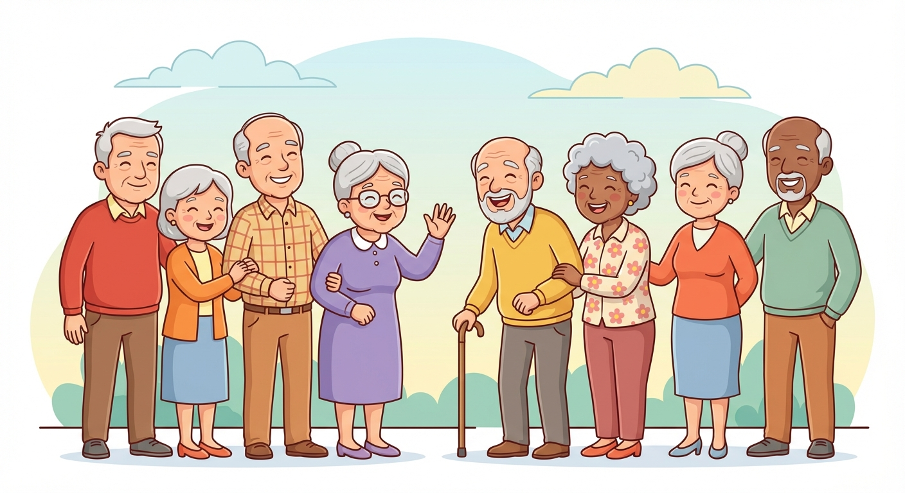

Multidisciplinary rehabilitation services delivered in your home and via Telehealth across Victoria. Supporting NDIS participants, Support at Home clients, and private individuals.

We provide services through multiple funding streams. Select the pathway that applies to you to explore what we offer.
Plan-managed and self-managed participants. Comprehensive OT and Osteopathy services.
View NDIS Services →Government-funded allied health for eligible older Australians living at home.
View SAH Services →Self-funded occupational therapy and osteopathy services available to everyone.
Get in Touch →Our occupational therapists work with you to overcome barriers to everyday living. From driving assessments to home modifications and assistive technology, we help you maintain independence and participate fully in life.
Our osteopaths take a whole-body approach to pain relief and movement. Through hands-on treatment, tailored exercise programs, and ongoing management plans, we help you move better and feel better.
We work with plan-managed and self-managed NDIS participants. Please note we do not service NDIA-managed clients.
Comprehensive driving evaluation services including vehicle modification recommendations, driving rehabilitation programs, and state-related assessments such as VicRoads Occupational Therapy driving assessments. We help participants get on the road or return to driving safely.
Our functional assessments provide a detailed evaluation of your current abilities across daily living activities, mobility, self-care, communication, and community participation. These assessments identify your strengths, challenges, and the supports you need to achieve your goals. A full functional assessment forms the foundation for your NDIS plan and ongoing therapy.
Our OTs assess your home environment to identify modifications that improve safety, accessibility, and independence. This can include ramp installations, bathroom modifications such as grab rails, shower seats, and accessible fixtures, widening doorways, installing handrails, threshold ramps, and other minor modifications throughout the home to reduce falls risk and support daily living.
We assess, trial, and recommend assistive technology and equipment to support your independence. From daily living aids to complex assistive devices, we match the right technology to your needs and goals.
We assist participants with Specialist Disability Accommodation (SDA) and Supported Independent Living (SIL) applications, providing detailed assessments and reports to support your housing and support needs.
Specialised assessments for manual and power wheelchairs, including seating and positioning. We work with you and equipment suppliers to ensure optimal comfort, function, and mobility.
Hands-on osteopathic treatment to address musculoskeletal pain, improve mobility, and support your overall wellbeing. Our osteopaths develop personalised management plans tailored to your condition and goals.
Individually designed exercise programs that complement your osteopathic treatment. Focused on building strength, improving flexibility, and preventing recurrence of pain or injury.
Government-funded allied health services for eligible older Australians, helping you stay independent and safe in your own home.
Comprehensive driving evaluation including vehicle modification recommendations, driving rehabilitation, and VicRoads Occupational Therapy driving assessments. We support older Australians to maintain their driving independence safely.
A thorough assessment of your current functional abilities, daily living needs, and goals. This informs your care plan and identifies the supports and interventions that will benefit you most.
We assess your home for modifications that improve safety and accessibility. This includes ramp installations, bathroom modifications such as grab rails, shower seats, and accessible fixtures, handrails, threshold ramps, and other minor modifications to reduce falls risk and help you live comfortably at home.
Assessment and recommendation of equipment and assistive devices to support your independence at home, from mobility aids to daily living equipment.
Hands-on osteopathic treatment to manage musculoskeletal pain and improve quality of life. Our osteopaths create personalised plans to address your specific needs.
Tailored exercise programs to improve strength, balance, and mobility. Designed to complement treatment and help you stay active and independent at home.
Ongoing osteopathic care for conditions such as arthritis, chronic pain, and musculoskeletal disorders. We work with you to manage symptoms, maintain mobility, and improve your quality of life over time.
Assessment of balance, gait, and musculoskeletal risk factors to reduce your risk of falls. Our osteopaths identify areas of concern and provide targeted treatment and exercises to help you stay safe and confident on your feet.
Pillars Therapy is a leading allied health service provider delivering multidisciplinary rehabilitation services in your home and remotely via Telehealth across Victoria.
Our team of occupational therapists and osteopaths are passionate about helping you achieve your goals, whether that's returning to driving, modifying your home for better accessibility, managing pain, or building strength and independence.
We believe everyone deserves care that's responsive, respectful, and tailored to their life. That's why we come to you.
Whether you're an NDIS participant, Support at Home client, or looking for private services, we're here to help. Reach out to book an assessment or ask a question.